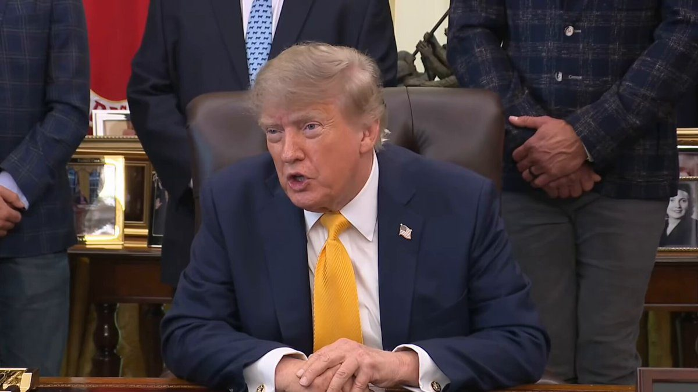
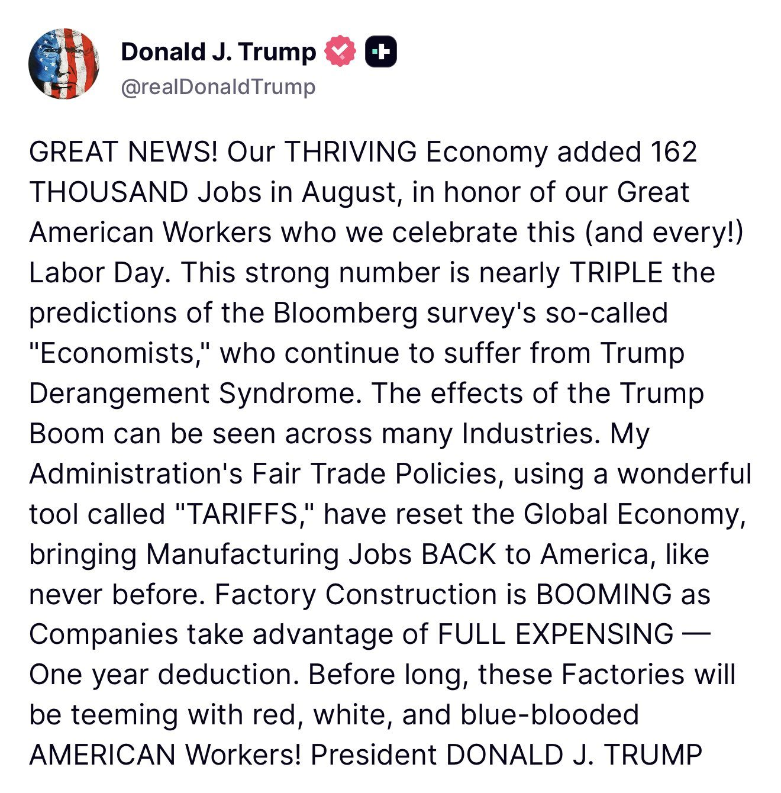
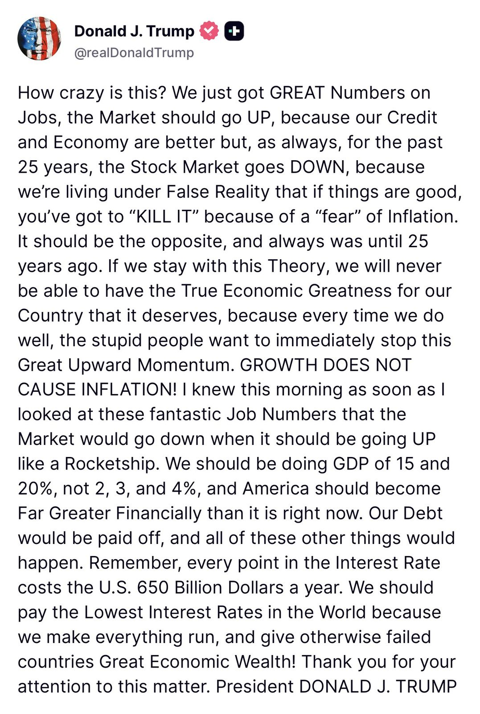
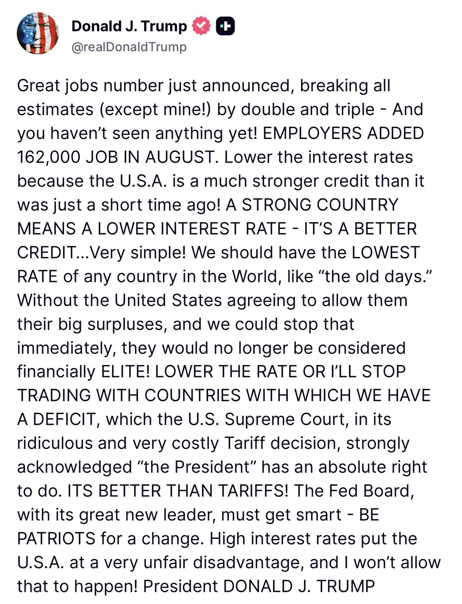
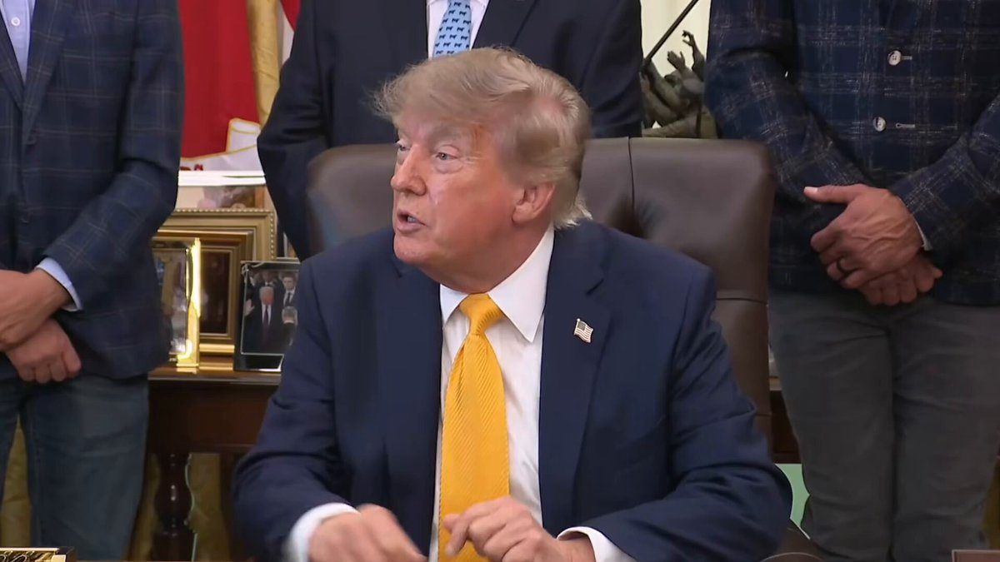
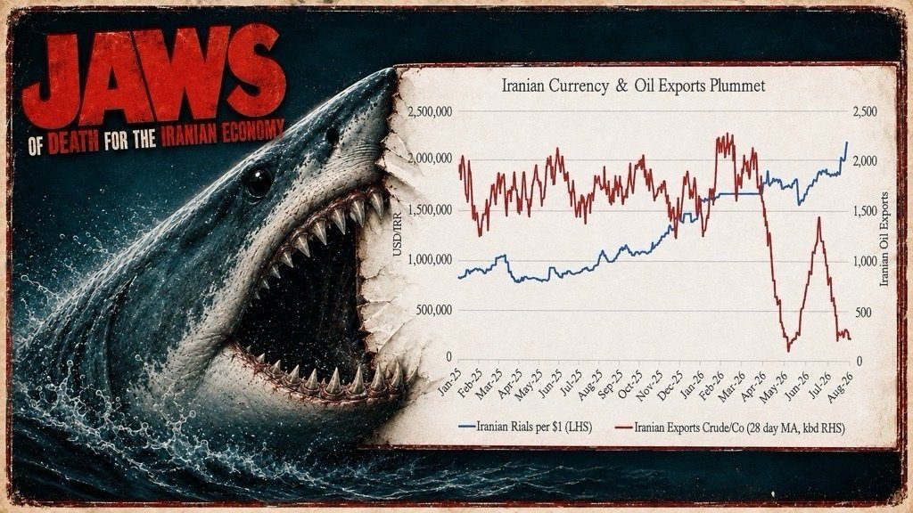
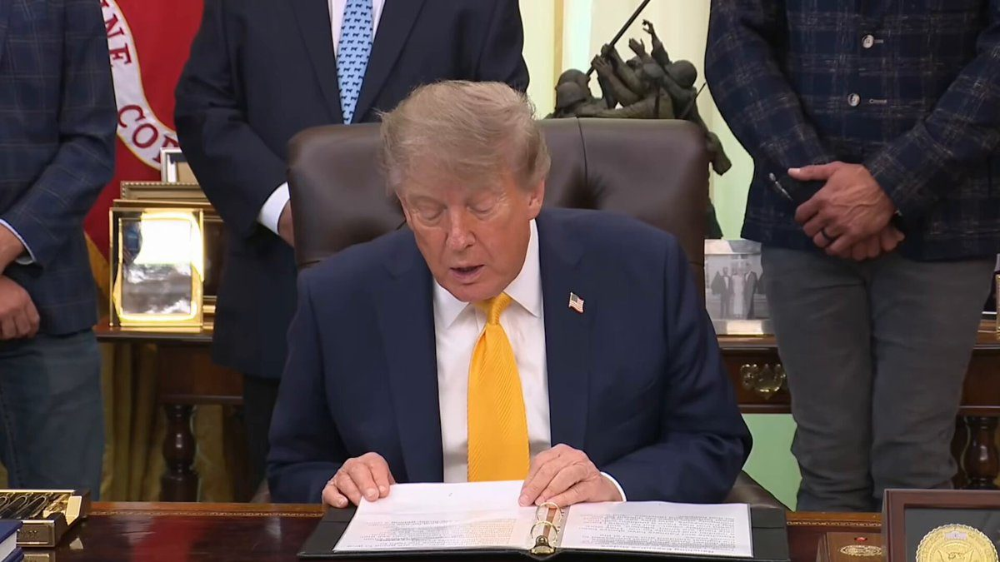
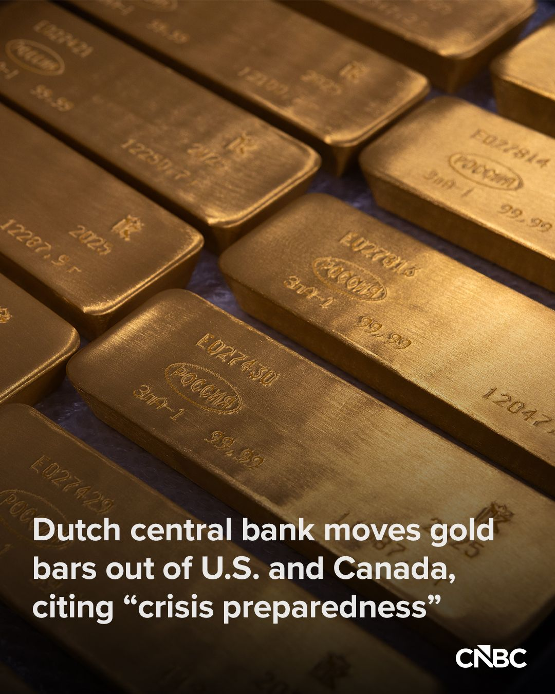
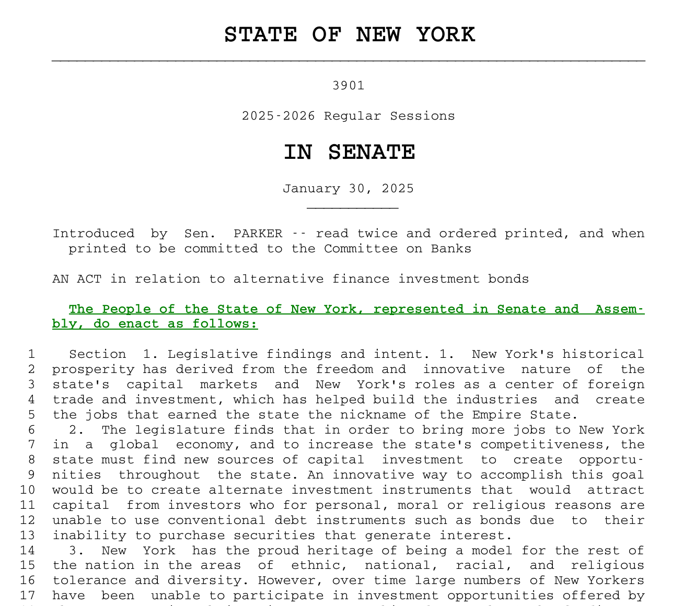
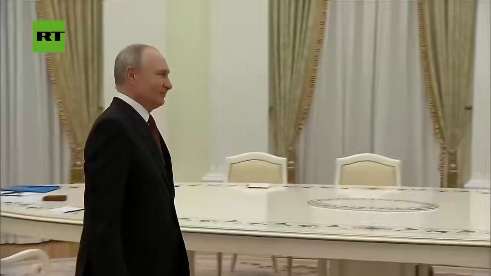

Today, as part of Operation Economic Outcast, Treasury severed the Iranian regime’s critical financial lifelines in Türkiye. The Office of Foreign Assets Control designated Türkiye-based Golden Global Bank and its subsidiaries, which have facilitated tens of millions of dollars’ worth of transactions for the Islamic Revolutionary Guard Corps-Qods Force and provide the Iranian regime with key correspondent banking access that allows it to move its funds internationally.
🚨 BREAKING: President Trump declares he will CUT OFF TRADE with nations that are allowed to pay lower interest rates than the United States
WAR MODE ON THE ANTI-AMERICAN FINANCIAL ORDER 🇺🇸
"Each point in interest in this country that we pay costs us $650 billion. We should be at 1 percent, or a half a percent. We shouldn't be at 4 percent."
"We have countries paying, some countries are paying a half a point. And we're paying 4 points. And yet, we're a much stronger credit than they are!"
"Because if we don't trade with them, they don't have any money to pay the bills. And if we're not going to be treated properly, we're going to do that."
"And all we have to do to cut our trade deficit with a country is not trade with them. Canada is one. If we don't do any trading with Canada, we just end all trade with Canada. We'd save ourselves $90 billion!"
"All trading with Canada. Don't forget, they do all of their business, almost all of their business with the United States. And we do a relatively small amount of business with them."
"But if we didn't want to, if we were playing hardball, all we'd do is say we're going to do no trading with Canada. If we did no trading with Canada, we'd save $90 billion."
"And so what I'm saying very simply is that we should be paying the lowest interest rate in the world."
"We have other countries at a half a percent. And yet, if it weren't for us, they'd be bankrupt countries. We should be the lowest in the world, as we were 25 and 30 years ago, under any circumstance."

▶ Watch on X


Equifax, Experian, and TransUnion have been overcharging Americans for far too long. This will end soon. We are seriously considering bi-merge, and stronger solutions (SAFER and SOUNDER). We will not allow companies to take advantage of American consumers. No more.
🚨 HOLY CRAP! Donald Trump just MIC DROPPED a reporter who started scathing him
REPORTER: Iran doesn't feel like small potatoes! 18 people died, record long deployments—
TRUMP: WHY is it record long?
REPORTER: *Tries to sideswipe the question*
TRUMP: How long were we in Vietnam? How long were we in Vietnam?
REPORTER: We're seeing—
TRUMP: NO, NO. How long were we in Vietnam?! We're in five months now. And you know what we did in five months? They're not going to have a nuclear weapon. That's what we did. Iran will not have a nuclear weapon. Because if they did, you probably wouldn't be standing here very long! 🔥🔥

▶ Watch on XSince the U.S. reinstated its blockade, no Iranian crude cargoes have successfully transited the Strait of Hormuz to China. Inventory cannot be replenished as crude piles up aboard vessels trapped inside the strait. Iran’s export lifeline is being cut off: stranded oil, finite storage, and rapidly shrinking revenue.

Financial institutions continue to find out the hard way that we are serious about Operation Economic Outcast. While we hope no more banks will need to be sanctioned, that ultimately depends on how quickly the international community comes to its senses and ceases support of the murderous Iranian regime. We know who you are, we know where you are, and we will continue to take action together with our allies and partners until we have buried the head of the Iranian snake.
JUST IN - South Korea prepares Hormuz military deployment — report
A good reminder on how finance still works today… the Central Bank of Netherlands just spent months moving $11B in gold from New York to London.
~70% of it never actually left the ground. It was sold in NYC and repurchased in London. This reminded me of a story from 2013 – Germany took four years (!!) to move 674 tons of gold, worth $36 billion from vaults in Paris and New York.
In the 10+ years between those two stories, crypto went from a $1.5B experiment to a $2.7T asset class + financial infrastructure with real liquidity behind it. What didn't change: central banks (and a lot of the world frankly) still moving value the way they did in the 1940s.
Meanwhile self-driving cars are navigating city traffic, AI has transformed how we work, Starlink gives you internet access from just about anywhere in the world. But the best way to move value isn’t to actually move it? It’s confounding…
This an ideal use case for crypto - storing and then moving value instantly, securely, around the world, at little to no cost. How are people still fighting this?!
The Florida Gators are proud to partner with XRP 🐊
🚨 WOW! Donald Trump reveals his new executive order will allow small and medium ranchers to TOTALLY IGNORE the big meatpackers, and sell direct to consumer — 47 is expecting major blowback from the mega corporations
"Small and medium sized and large ranchers can sell their products DIRECT TO CONSUMER, they don't have to go through the Big Four processors and middlemen. They're NOT gonna be happy when they hear this! Will you people protect me?!" 😂
Trump made the RIGHT MOVE.

▶ Watch on XThe Dutch central bank has transferred approximately 86 metric tons of gold from the U.S. and Canada to the U.K., seeking to shore up its contingency planning amid “increasing geopolitical unrest.”
Just over one quarter of the central bank’s gold reserves held in New York and Ottawa was shifted to London between March and August, the bank said.

EXCLUSIVE: New York Democrats are trying to create a Sharia-compliant state bond—and explore letting cities issue their own.
S3901 would force five state bodies to build a sukuk, an Islamic financial instrument designed to generate returns without paying interest.

Trump’s envoys Witkoff and Kushner heading to Moscow and Kiev this weekend for talks — Axios citing US officials
It'll be the first visit for both to Kiev since Trump took office

▶ Watch on XPutin Says There's A Chance Of Ukraine Peace Deal, Wants To Restore Full US Relations
Welcome to the Foundry School!
Putting American workers first. A first-of-its-kind workforce program building the talent behind America’s manufacturing comeback. 🇺🇸
We now have evidence of how at least $7.7 billion for homelessness was spent on salaries. They created a jobs program that grows at the expense of the actual homeless who need help instead of helping the homeless. The waste is astounding. 🧵
JUST IN: US automakers ask Congress to permanently ban Chinese cars, software, and hardware
JUST IN: 🇮🇱🇱🇧 Israel launches strikes against Hezbollah targets in southern Lebanon.